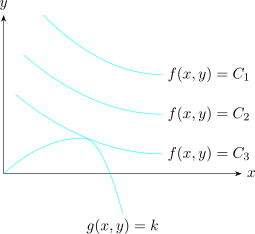
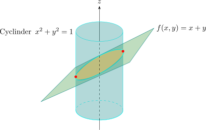
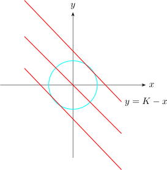
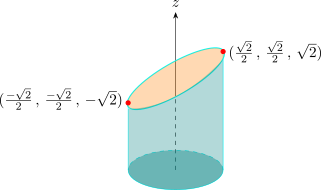
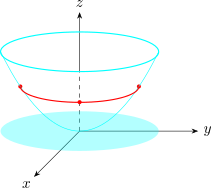

1.6 Extrema for Functions with Side Conditions (Constraints)
Lagrange Multipliers
Find the extreme values of \(f(x,y)\) subject to \(g(x,y) =K\). To maximise \(f(x,y)\) subject to \(g(x,y) = K\) is to find the largest value of \(C\) such that the level curve \(f(x,y) = C\) intersects the \(g(x,y) = K\). This occurs when the curves touch each other i.e when they have a common tangent line.

This means that the normal lines at the point \((x_0,y_0)\) are identical so the gradient vectors are parallel \[ \nabla f(x,y) = \lambda \nabla g(x,y)\] for the scalar \(\lambda \). The number \(\lambda \) is called the Lagrange multiplier.
Method of Lagrange Multipliers
To find the max or min values of \((x,y,z)\) subject to the constraints \(g(x,y,z) = K\) (assuming the extreme values exist and \(\nabla g(x,y,z) \neq 0)\). on the surface \(g(x,y,z) = K\).
- 1.
- Find all the values of \(x, y, z\) and \(\lambda \) \[\nabla f(x,y,z) = \lambda \nabla g(x,y,z)\]
- 2.
- Evaluate \(f\) at all points \((x,y,z)\) that result from step (1). The largest value of these gives the maximum value of \(f\), and the smallest value gives the minimum value of the function.
Find the extreme values of the function \(f(x,y) = x + y\) subject to the constraint \(x^2 + y^2 = 1\)

\(f(x,y) = x + y\)
\(g(x,y): \hspace {0.3cm} x^2 + y^2 = 1\)
\(x + y = z\)
\(K = x + y\)

\begin {align*} f(x,y) & = x + y \\ g(x,y) & =x^2 + y^2 - 1 \end {align*}
\begin {align*} \nabla f & = \lambda \nabla g \end {align*}
\[\nabla f = \textbf {i} + \,\textbf {j}\hspace {0.2cm},\hspace {0.5cm} \nabla g = 2x\, \textbf {i} + 2y\, \textbf {j}\]
\begin {align*} 1 & = 2x\lambda \hspace {0.5cm}\cdots \cdots \cdots \hspace {0.5cm} (1)\\ 1 & = 2y\lambda \hspace {0.5cm} \cdots \cdots \cdots \hspace {0.5cm} (2)\\\\ 1 & = x^2 + y^2\hspace {0.5cm}\cdots \cdots \cdots \hspace {0.5cm} (3) \end {align*}
substituting (1) and (2) \(\implies x = y\)
Stationary \(2x^2 = 1 \implies x = \pm \dfrac {\sqrt {2}}{2}\)
Stationary points \(\bigg (\dfrac {\sqrt {2}}{2}, \dfrac {\sqrt {2}}{2}\bigg )\) and \(\bigg (-\dfrac {\sqrt {2}}{2}, -\dfrac {\sqrt {2}}{2}\bigg )\).
\(f\bigg (\dfrac {\sqrt {2}}{2}, \dfrac {\sqrt {2}}{2}\bigg )=\sqrt {2}\hspace {1cm}\) Max
\(f\bigg (\dfrac {-\sqrt {2}}{2}, \dfrac {-\sqrt {2}}{2}\bigg )=-\sqrt {2}\hspace {1cm}\) Min

Find the extreme values of the function \(f(x,y) = x^2 + 2y^2\) on the circle \(x^2 + y^2 = 1\)
\begin {align*} \nabla f & = \lambda \nabla g\\\\ \nabla f & = 2x\,\textbf {i}+ 4y\,\textbf {j}\\ \nabla g & = 2x\,\textbf {i} + 2y\,\textbf {j} \end {align*}
\begin {align*} 2x & = 2x\lambda \\ 4y & = 2y\lambda \end {align*}
\(2x = 2x\lambda \implies x = 0\) or \(\lambda = 1\)
If \(\lambda = 1\), then \(y = 0\) \begin {align*} x^2 + y^2 = 1 \implies & x = 0, \hspace {0.3cm} y \neq 1\\ & y = 0 , \hspace {0.3cm} y \neq \pm 1 \end {align*}
Therefore, \(f\) has possible extreme values at the points \((0,-1), (0,1)\) or \((1,0), (-1,0)\)
\begin {align*} f(x,y) & = x^2 + y^2\\\\ f(1,0) & =1 \hspace {0.4cm},\hspace {0.4cm} f(0,1) = 2\\ f(-1,0) & =1 \hspace {0.4cm},\hspace {0.4cm} f(0,-1) = 2 \end {align*}
The max value of \(f\) on the circle \(x^2 + y^2 = 1\) is \(f(0,\pm 1)= 2\) and the min is \(f(\pm , 0)=1\)

Two Constraints
Let \(f(x,y,z)\) be a function to be minimised/maximised subject to two constraints \begin {align*} g(x,y,z) & =0\\ h(x,y,z) & =0 \end {align*}
\[\nabla f(x,y,z) =\lambda \nabla g(x,y,z) + \mu \nabla h(x,y,z)\]
\(f_x = \lambda g_x + \mu h_x\)
\(f_y = \lambda g_y + \mu h_y\)
\(f_z = \lambda g_z + \mu h_z\)
\begin {align*} g(x,y,z) & = K\\ h(x,y,z) & = C\\\\ \end {align*}
Find the maximum value of the function \(f(x,y,z) = x + 2y + 3z\) on the curve of intersection of the place \(x - y - z =1\) and the cylinder \(x^2 + y^2 = 1\).
Solution.
\(\nabla f = \textbf {i} + 2\,\textbf {j} + 3\,\textbf {k}\)
\(\nabla g = \textbf {i} - \textbf {j} - \textbf {k}\)
\(\nabla h = 2x\,\textbf {i} + 2y\,\textbf {j}\)
\begin {align*} \implies \hspace {1cm} 1 & = \lambda + 2x\mu \hspace {1.4cm} (1)\\ 2 & = -\lambda + 2y\mu \hspace {1cm} (2)\\ 3 & = \lambda \hspace {2.5cm} (3)\\\\ x - y + z & = 1 \hspace {2.5cm} (4)\\ x^2 + y^2 & = 1\hspace {2.5cm} (5)\\ \end {align*}
Taking \(\lambda = 3\), substituting into (1) and (2) we have \begin {align*} 2x\mu & = -2 \implies x = \frac {-1}{\mu }\\\\ 2y\mu & = 5 \implies y = \frac {5}{2\mu } \end {align*}
substituting these into (5) \[\frac {1}{\mu ^2}+ \frac {25}{4\mu ^2} = 1 \implies \mu ^2 = \frac {29}{4}\implies \mu = \pm \frac {\sqrt {29}}{2}\]
\[x = \pm \frac {2}{\sqrt {29}}\hspace {0.5cm},\hspace {0.5cm} y = \pm \frac {5}{\sqrt {29}}\]
\begin {align*} z & = 1 -x - y\\\\ & = 1 - \bigg (\pm \frac {2}{\sqrt {29}}\bigg ) + \bigg (\pm \frac {5}{\sqrt {29}}\bigg )\\\\ \implies \hspace {1cm} z & = 1 \pm \frac {7}{\sqrt {29}}\\ \end {align*}
\begin {align*} f(x,y,z) & = x + 2y + 3z\\\\ & = \bigg (\pm \frac {2}{\sqrt {29}}\bigg ) + 2\bigg (\pm \frac {5}{\sqrt {29}}\bigg ) + 3\bigg ( 1 \pm \frac {7}{\sqrt {29}}\bigg )\\ \end {align*}
Critical points \(\bigg (\dfrac {2}{\sqrt {29}}, \dfrac {-5}{\sqrt {29}}, 1 - \dfrac {7}{\sqrt {29}}\bigg )\) and \(\bigg (\dfrac {-2}{\sqrt {29}}, \dfrac {5}{\sqrt {29}}, 1 + \dfrac {7}{\sqrt {29}}\bigg )\).
Max value is \(3 + \sqrt {29}\)
Questions on this section
Stuck on something here? Ask below and it stays attached to this topic.